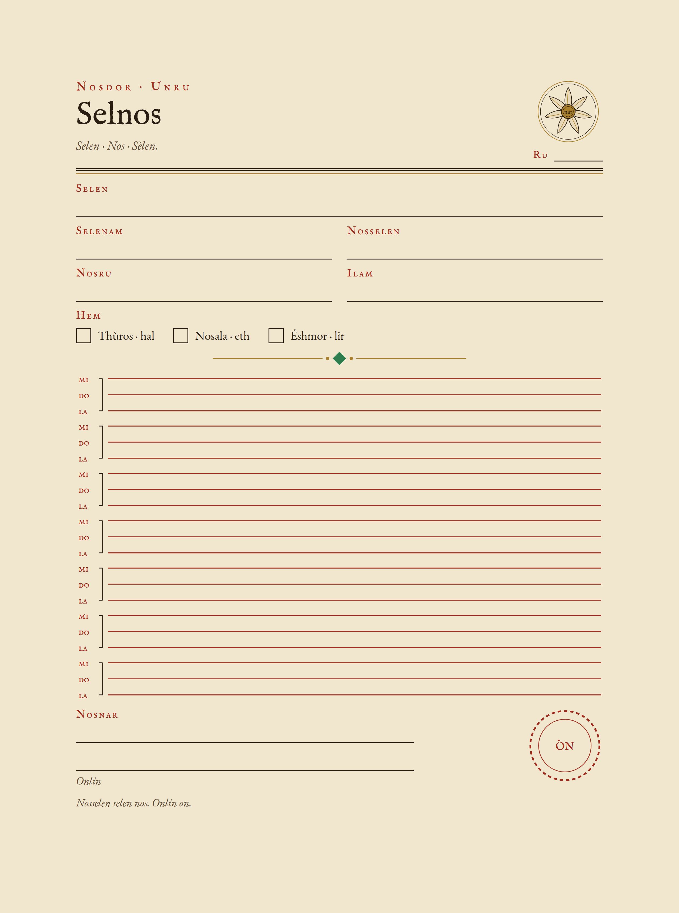
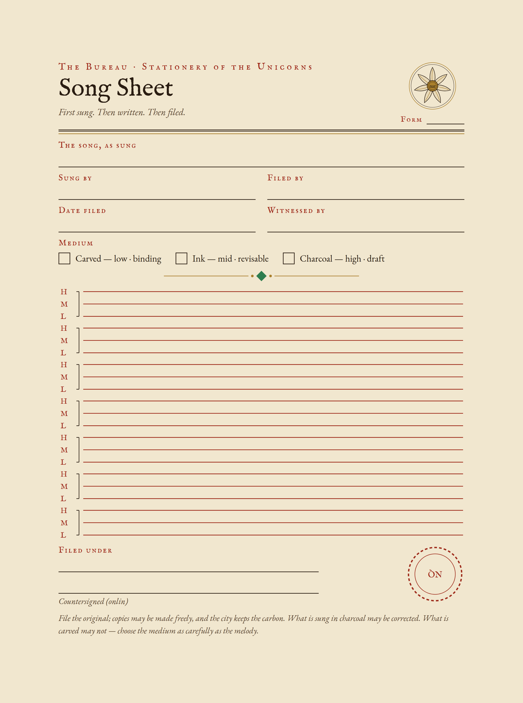

In Montavera, a song is not finished when it is sung. It is finished when it is filed. Màranven is the book of Sèlanar, the sung language of the city — a language in which the pitch a word is sung on is part of what the word means, and in which a filing, a promise, and a melody are filed on the same form.
That form is the song sheet: the unicorns’ own stationery, issued by the Bureau and printed blank in the back of the book, ruled and ready. If you arrived here by the code on the book’s instruction page, you are in the right office. Both sheets below are the sheets exactly as they stand in the book — the original in Sèlanar, and the same sheet in Common.
Then write what the song is filed under, countersign it, and set the seal in the circle left for it at the foot of the sheet. A song unsealed is still being sung.
Each sheet is a single page, sized exactly as in the book. Print it, copy it as often as a table requires — copies may be made freely, and the city keeps the carbon.

